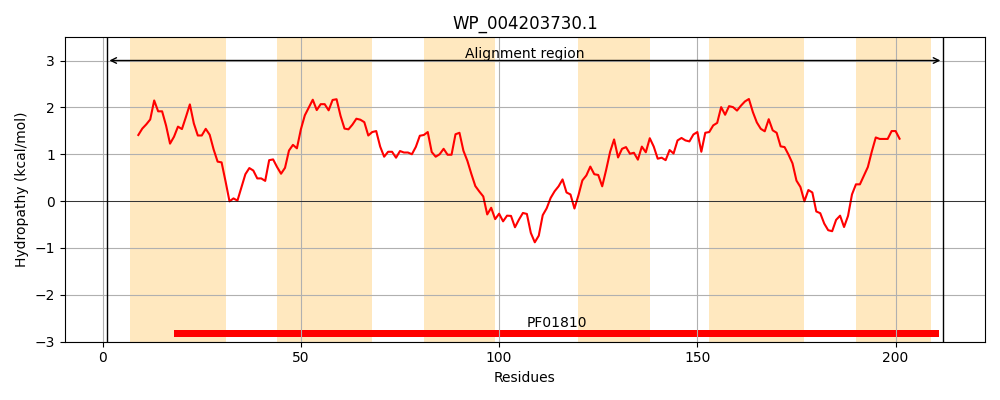
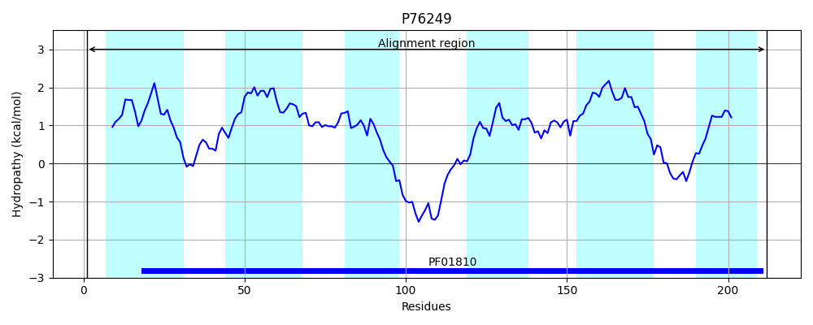

Hit Accession: P76249
Hit TCID: 2.A.76.1.5
Hit Description: gnl|BL_ORD_ID|11453 gnl|TC-DB|P76249|2.A.76.1.5 Hypothetical protein yeaS - Escherichia coli.
Mach Len: 212
e:0.000000
Query TMS Count : 6
Hit TMS Count: 6
TMS-Overlap Score: 6.600000
Predicted Substrates:CHEBI:6276;L-norleucine, CHEBI:4261;D-valine, CHEBI:6271;L-methionine, CHEBI:6321;L-valine, CHEBI:6240;L-histidine, CHEBI:25017;leucine
BLAST Alignment:
Score: 814 , Bit scores: 318 bits, E-value: 8.5e-112, Alignment length: 212, Percentage identity: 74
Query: 1 MFAEFGVLNYLTYLVGAVFIILVPGPNTFFVLKTGIAHGVKKGYLAAAGVFIGDAVLMFLAFAGVATLIKTTPVLFNVVRYLGAIYLLWLGGKMLYAVLTQRDGQADASAEPASAILKRSLTLSLTNPKAILFYVSFFVQFIDVNAKAPGVAFFILALTLEVISFCYMSFLILSGSFVTRYVKTRKKLAKLGNSLIGLVFVGFAARLATLQS 212
MFAE+GVLNY TYLVGA+FI+LVPGPNT FVLK ++ G+K GYLAA GVFIGDAVLMFLA+AGVATLIKTTP+LFN+VRYLGA YLL+LG K+LYA L ++ +A + AI KR+L LSLTNPKAILFYVSFFVQFIDVNA G++FFILA TLE++SFCY+SFLI+SG+FVT+Y++T+KKLAK+GNSLIGL+FVGFAARLATLQS
Sbjct: 1 MFAEYGVLNYWTYLVGAIFIVLVPGPNTLFVLKNSVSSGMKGGYLAACGVFIGDAVLMFLAWAGVATLIKTTPILFNIVRYLGAFYLLYLGSKILYATLKGKNSEAKSDEPQYGAIFKRALILSLTNPKAILFYVSFFVQFIDVNAPHTGISFFILAATLELVSFCYLSFLIISGAFVTQYIRTKKKLAKVGNSLIGLMFVGFAARLATLQS 212 | Protein Hydropathy Plots: |
|---|
|  |  |
Pairwise Alignment-Hydropathy Plot:
|
|---|
 |